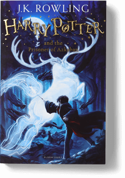
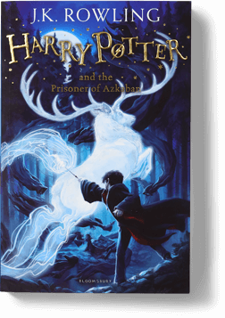

HARRY POTTER AND THE
PHILOSPHER'S STONE

HARRY POTTER AND THE
PHILOSPHER'S STONE
The first Harry Potter book, Harry Potter and the Philosopher’s Stone, was published in 1997 to immediate popular and critical acclaim. Six further best-selling books and eight blockbuster films followed. The books have been translated into over 80 languages, won multiple awards, and sold more than 500 million copies worldwide, becoming the best-selling book series in history.. In 2016, a new era of the Wizarding World was unveiled with the launch of Fantastic Beasts and Where to Find Them, an original screenplay by J.K. Rowling and the first in a major film series for Warner Bros. Pottermore Publishing is the global digital publisher of the Harry Potter series and Fantastic Beasts film tie-ins, as well as other digital audiobooks and eBooks from the Wizarding World.
 



Robert Galbraith is a pseudonym of J.K. Rowling. After Harry Potter, the author chose crime fiction for her next books, a genre she has always loved as a reader. She wanted to write a contemporary whodunit, with a credible back story. Robert Galbraith’s Cormoran Strike series is classic contemporary crime fiction from a master story-teller, rich in plot, characterisation and detail. Galbraith’s debut into crime fiction garnered acclaim amongst critics and crime fans alike. The first four novels The Cuckoo’s Calling (2013), The Silkworm (2014), Career of Evil (2015) and Lethal White (2018) all topped the national and international bestseller lists and have been adapted for television by the BBC and HBO. The fifth book, Troubled Blood has now been published and also went straight to the top of the bestseller lists. J.K. Rowling’s original intention for writing as Robert Galbraith was for the books to be judged on their own merit, and to establish Galbraith as a well-regarded name in crime in its own right. Now Robert Galbraith’s true identity is widely known, J.K. Rowling continues to write the crime series under the Galbraith pseudonym to keep the distinction from her other writing and so people will know what to expect from a Cormoran Strike novel. The Robert Galbraith website can be found here - robert-galbraith.com